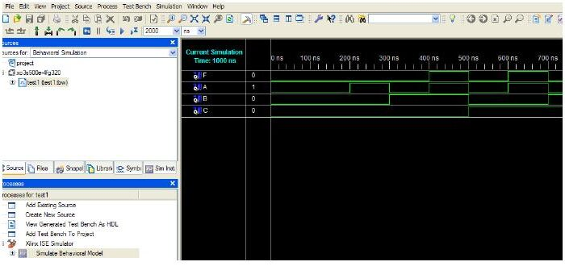

· EEM211
EEM211 Sayısal Mantık Tasarımı: Verilog'a Giriş ve Xilinx ISE ile Proje Hazırlama (Laboratuvar Notları, 2011)
EEM211 – Sayısal Mantık Tasarımı · 19.10.2011 · 16.10.2026
Bu yazı, Başkent Üniversitesi EEM211 Sayısal Mantık Tasarımı laboratuvarında 2011 güz döneminde kullanılan iki yardımcı belgeyi aktarıyor: Doç. Dr. Hamit Erdem ve Araş. Gör. Gencer Tulay'ın hazırladığı "Verilog" sunusu (Ekim 2011) ve Araş. Gör. Evren Emekdaş ile Araş. Gör. Gencer Tulay'ın hazırladığı "Xilinx Programı ile Proje Hazırlanması" kılavuzu (Ekim 2011). Kılavuz adım adım ekran görüntülerinden oluşuyor; adımlar aşağıda metin olarak verildi. İki PDF yazının sonunda ZIP olarak indirilebilir.
Verilog
HDL nedir?
HDL (Hardware Description Language), Türkçesiyle DTD (Donanım Tanımlama Dili), sayısal devrelerin tanımlanması amacıyla kullanılan bilgisayar dillerinin sınıfına verilen addır. DTD, devrenin yürüttüğü işlemin tasarımını ve benzetim yoluyla doğrulanmasını sağlar. En çok bilinen DTD'ler Verilog ve VHDL'dir; diğerleri arasında ABEL, AHDL, Hardware Join Java, Lola, MyHDL ve Ruby sayılıyor.
Bir sayısal sistem üç farklı seviyede tanımlanabilir:
- Anahtar seviyesi (switch level): kablo, direnç, transistör vb. elemanlar.
- Kapı seviyesi (gate level): mantıksal kapılar, flip-floplar.
- Yazmaç aktarım seviyesi (register transfer level, RTL): yazmaçlar ve yazmaçlar arasındaki sinyal akışı.
Verilog ve VHDL
Verilog, donanım tanımlamak için kullanılan bir dildir; 1985'te Gateway Design Corporation tarafından çıkarılmış, bugün Cadence Design Systems'in ürünüdür. Ders kapsamında Xilinx program geliştirme ortamında kullanılıyor.
- Verilog C'ye, VHDL Ada'ya yakındır.
- Avrupa'da VHDL, Amerika ve Uzak Doğu'da Verilog yaygındır.
- Anahtar ve kapı seviyesindeki tasarımlarda Verilog daha kullanışlıdır.
- Verilog büyük/küçük harfe duyarlıdır, VHDL değildir.
Niçin kullanılır?
Tasarım oluşturmak ve benzetim (simulation) yoluyla test etmek için. Bir elektronik tasarım modellenip çeşitli testlerle denetlenmezse, çalışma sırasında öngörülemeyen hatalarla karşılaşılabilir; bu da maliyet olarak zarar demektir ve seri üretim hacmi yüksekse büyük maddi kayba yol açar.
Tasarım yöntemleri
Yapısal (structural), davranışsal (behavioral) ve fiziksel (physical) tasarım. Aynı devrenin (X = AB + C', Y = C') yapısal ve davranışsal tanımı:
// Yapısal tasarım
module cct(X,Y,A,B,C);
output X,Y;
input A,B,C;
wire e;
and a1(e,A,B);
not i1(Y,C);
or o1(X,e,Y);
endmodule// Davranışsal tasarım
module cct(X,Y,A,B,C);
output X,Y;
input A,B,C;
assign Y=~C;
assign X=(A&B)|Y;
endmoduleNot: Sunuda module cct(X,Y,A,B,C) satırlarının sonunda noktalı virgül yok; Verilog'da modül başlığı ; ile bitmelidir, yukarıda eklendi.
Kaynaklar: www.fpgarelated.com, www.asic-world.com, www.verilog.com, www.verilog.net.
Xilinx programı ile proje hazırlanması
Proje oluşturma
Xilinx ISE açıldığında en son çalışılan proje üzerinden devam eder. Bu yüzden yeni bir çalışmaya başlarken önce File → Close Project ile açık projeyi kapatıp File → New Project ile yeni proje oluşturun; dosyaların kaydedileceği yeri seçip projeye isim verin. New Project Wizard – Device Properties penceresinde şu ayarları yapın:
| Ayar | Değer |
|---|---|
| Family | Spartan3E |
| Device | XC3S500E |
| Package | FG320 |
| Speed | -4 |
| Simulator | ISE Simulator (VHDL/Verilog) |
Sonraki Create New Source ve Add Existing Sources pencerelerinde Next'e basın, Project Summary penceresinde ayarları denetleyip Finish'e basın.
Şematik dosyası oluşturma
Soldaki Sources penceresinde çip modelinin üstüne sağ tıklayıp New Source'u seçin. Select Source Type penceresinde Schematic'i işaretleyip dosya adını yazın, Next ve Finish'e basın. Açılan sayfada çalışmanızı şema olarak hazırlayıp kaydedin.
Verilog dosyası oluşturma
Yine çip modeline sağ tıklayıp New Source → Verilog Module seçin, dosya adını verin. Giriş-çıkış tanımı ekranından sonra Finish'e basınca Verilog kodunu yazacağınız düzenleyici açılır; kodunuzu yazıp kaydedin.
Test dosyası oluşturma
Kaynak dosyası üzerine sağ tıklayıp New Source → Test Bench Waveform seçin ve dosya adını verin. Finish'ten sonra açılan Initial Timing and Clock Wizard – Initialize Timing penceresinde, Clock Information bölümünde Combinatorial (or internal clock) seçeneğini işaretleyin. Açılan .tbw uzantılı test dosyasına benzetim için uygun giriş değerlerini girip kaydedin.
Xilinx ISE Simulator ile benzetim
Sources for seçeneğini Behavioral Simulation yapın, test dosyanızı açın ve Processes bölümünde Simulate Behavioral Model'e çift tıklayın. Benzetim sonuçlarını tasarımınızdan beklediğiniz sonuçlarla karşılaştırın; fark varsa tasarım aşamasına geri dönün.

Pin bağlantılarının tanımlanması
Processes bölümünde User Constraints → Floorplan Area/IO/Logic – Post-Synthesis seçeneğine çift tıklayın ve çıkan pencerede Yes'e basın. Açılan Xilinx PACE penceresinde .ucf uzantılı kısıt dosyası oluşur; burada Nexys2 kartında kullanacağınız pin bağlantılarını, kart üzerinde yazılı değerlere göre tanımlayın (örneğin SW0 için G18, LD0 için J14). Dosyayı kaydedin.
Ardından Generate Programming File seçeneğine sağ tıklayıp Properties'i açın; Startup Options kategorisinde FPGA Start-Up Clock'u JTAG Clock yapın. Sonra Generate Programming File'a sağ tıklayıp Run deyin. İşlem bitince Nexys2 kartına yüklenecek .bit uzantılı dosya üretilir.
Karta program yükleme
Programlar menüsünden Digilent → Adept → Adept'i çalıştırın. Bilgisayar Nexys2 kartını USB üzerinden gördüğünde açılan pencerede, FPGA XC3S500E satırında Browse ile .bit dosyasını seçip Program'a basın. Yükleme doğru yapıldıysa Programming Successful mesajı çıkar. Kart üzerindeki buton ve LED'lerle tasarımınızın donanımda doğru çalışıp çalışmadığını görün.